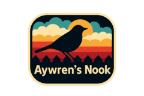

Stargrace discusses the ebbs and flows of World of Warcraft gold making, revealing how a hectic streaming schedule impacts her virtual economy strategies.
Stargrace discusses the ebbs and flows of World of Warcraft gold making, revealing how a hectic streaming schedule impacts her virtual economy strategies.
 Tipa shares enthusiasm for the new Malifaux league with anecdotes of epic battles and a dash of competitiveness in the evolving tabletop skirmish scene.
Tipa shares enthusiasm for the new Malifaux league with anecdotes of epic battles and a dash of competitiveness in the evolving tabletop skirmish scene.
 Frostilyte shares initial excitement over 'Alabaster Dawn', the latest action RPG from Radical Fish Games, promising a thrilling return to 16-bit era RPG charm.
Frostilyte shares initial excitement over 'Alabaster Dawn', the latest action RPG from Radical Fish Games, promising a thrilling return to 16-bit era RPG charm.
 Belghast dives into Diablo IV's latest season, critiquing its temporary content focus and lamenting the elusive ancestral gear as the game evolves yet remains flawed.
Belghast dives into Diablo IV's latest season, critiquing its temporary content focus and lamenting the elusive ancestral gear as the game evolves yet remains flawed.
 Ruth unveils the latest CSS tweaks for Bearblog, highlighting the improved blog post list page with dynamic tags and exploring web typography nuances.
Ruth unveils the latest CSS tweaks for Bearblog, highlighting the improved blog post list page with dynamic tags and exploring web typography nuances.
 Bruce Schneier warns about the deceptively polished tactics of phone scammers, reminding readers that even the savvy can fall for social engineering schemes.
Bruce Schneier warns about the deceptively polished tactics of phone scammers, reminding readers that even the savvy can fall for social engineering schemes.
Scopique revisits his music management saga, transitioning to MediaMonkey after Crates mismanaged his library, with reflections on the quest for perfect audio organization.
 Dave Winer reflects on blogging’s past and future, criticizing the unintended impact of platforms like Twitter while fostering renewed interest in the blogosphere.
Dave Winer reflects on blogging’s past and future, criticizing the unintended impact of platforms like Twitter while fostering renewed interest in the blogosphere.
 Remy Porter critiques a well-intentioned but flawed Java method designed to trim strings, humorously highlighting its inefficiencies and pitfalls in handling whitespace.
Remy Porter critiques a well-intentioned but flawed Java method designed to trim strings, humorously highlighting its inefficiencies and pitfalls in handling whitespace.
 Raymond Chen explains why enumerating hidden taskbar icons using UI Automation is impossible, delving into the intricacies of UI object modeling limitations.
Raymond Chen explains why enumerating hidden taskbar icons using UI Automation is impossible, delving into the intricacies of UI object modeling limitations.

Aywren explores the creativity behind building a Corvette in No Man’s Sky, celebrating the immersive and customizable nature of the newest expedition feature.
Lisette's Mxtadventures
Crimson finds joy in tracking life’s numbers, from blog views to spending habits, as a way to balance adulting with ambitions like con visits and book buying sprees.
Crimson finds joy in tracking life’s numbers, from blog views to spending habits, as a way to balance adulting with ambitions like con visits and book buying sprees.